تطبيق المريض
تطبيق MedTech للمرضى
انضم إلى برنامج الدعم، وأرسل مستنداته، واستلم كل جرعة، واحجز زيارات الأطباء — كل ذلك من هاتفك.
للمرضى الذين يستخدمون تطبيق MedTech على أندرويد أو آيفون.
اضغط على الصورة لتكبيرها.
البداية
حمّل تطبيق MedTech من Google Play أو App Store. عند فتحه أول مرة يطلب منك التطبيق اختيار لغتك: العربية أو English. يمكنك تغييرها في أي وقت من الإعدادات.
تظهر بعدها بعض شاشات الترحيب؛ اضغط «تخطي» للمتابعة مباشرة. إذا طلب التطبيق التحديث فحدّثه من المتجر — لا يمكن استخدام إصدار قديم.
تسجيل الدخول أو إنشاء حساب
لا تحتاج إلى كلمة مرور. رقم موبايلك هو حسابك، ورمز يصلك برسالة SMS يُدخلك إلى التطبيق.
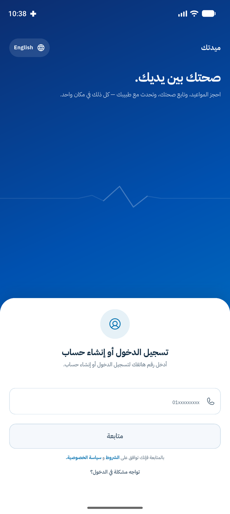
- 1اكتب رقم موبايلك المصري (يبدأ بـ 010 أو 011 أو 012 أو 015).
- 2متابعة — يرسل التطبيق رمزًا من ٦ أرقام إلى هذا الرقم برسالة SMS.
- 3تواجه مشكلة في الدخول؟ تساعدك إذا لم يصل الرمز، وتعرض طرق التواصل مع الدعم.
- 4English يحوّل التطبيق إلى الإنجليزية، ويمكنك العودة إلى العربية في أي وقت.
بالمتابعة فإنك توافق على الشروط وسياسة الخصوصية؛ اضغط على أيٍّ منهما لقراءته.
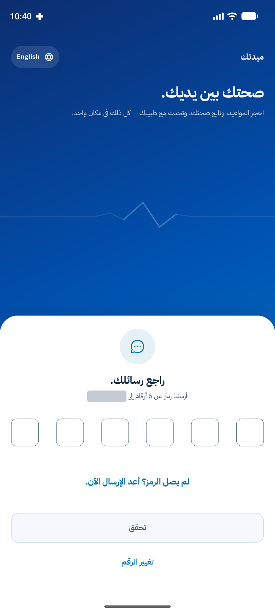
- 1اكتب الرمز المكوّن من ٦ أرقام الذي وصلك برسالة SMS.
- 2لم يصل الرمز؟ أعد الإرسال الآن. يرسل لك رمزًا جديدًا. بعد إرسال الرمز مباشرةً يعدّ الرابط بضع ثوانٍ أولًا.
- 3تحقق لتسجيل الدخول.
- 4تغيير الرقم إذا كتبت رقمًا خاطئًا.
في المرة الأولى يسألك التطبيق بعض الأسئلة عنك:
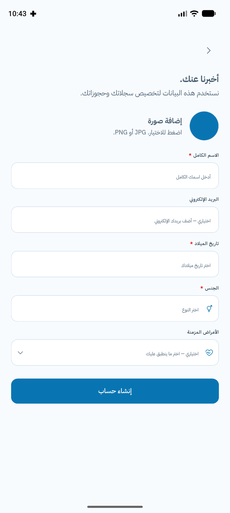
- 1إضافة صورة — صورة لملفك إن أردت (JPG أو PNG).
- 2الاسم الكامل — مطلوب.
- 3البريد الإلكتروني — اختياري.
- 4تاريخ الميلاد والجنس — كلاهما مطلوب.
- 5الأمراض المزمنة — اختيارية؛ اختر ما ينطبق عليك.
- 6إنشاء حساب لإنهاء التسجيل وفتح الرئيسية.
الرئيسية
تخبرك الرئيسية دائمًا بالخطوة التالية المطلوبة منك.
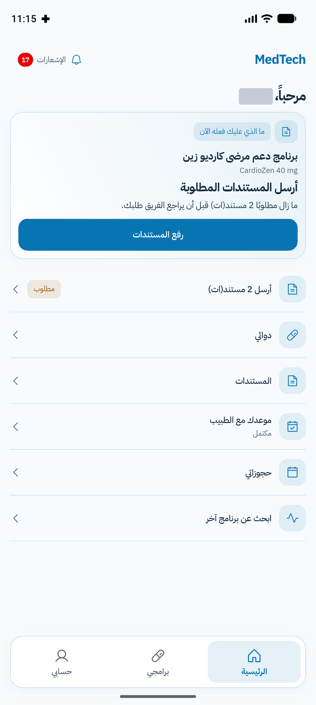
- 1الإشعارات — الرقم الأحمر يعرض عدد الإشعارات غير المقروءة.
- 2ما الذي عليك فعله الآن — خطوتك التالية، مع زر ينقلك إليها (هنا رفع المستندات).
- 3كل ما زال ينتظرك تظهر عليه علامة مطلوب.
- 4الاختصارات: دوائي، والمستندات، وموعدك مع الطبيب، وحجوزاتي، وابحث عن برنامج آخر.
- 5التبويبات في الأسفل: الرئيسية، وبرامجي، وحسابي.
اسحب الشاشة للأسفل لتحديثها.
برامج الدعم
برنامج الدعم يوفّر لك دواءك بسعر مخفّض أو مجانًا. طبيبك هو من يسجّلك أثناء الزيارة — لا يمكنك الانضمام إلى برنامج بنفسك. بعدها تُكمل الخطوات في التطبيق.
ابحث عن برنامج وأطبائه
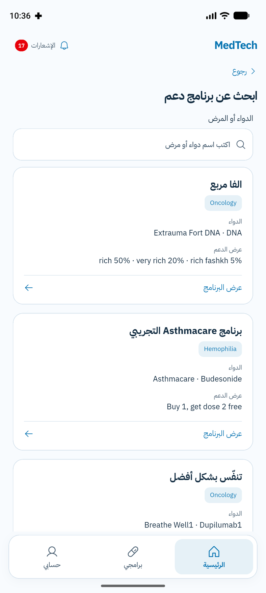
- 1اكتب اسم دواء أو مرض في خانة الدواء أو المرض للبحث.
- 2يعرض كل برنامج المرض الذي يخدمه، والدواء الذي يغطيه، وعرض الدعم الذي يقدّمه.
- 3عرض البرنامج يفتح البرنامج: ما يطلبه منك والأطباء الذين يعملون معه.
من صفحة البرنامج يمكنك حجز زيارة مع أحد أطبائه.
سجّل ملف برامج الدعم (مرة واحدة)
تملأ ملف برامج الدعم مرة واحدة ويُستخدم لكل البرامج. له خطوتان: مسح البطاقة ومراجعتها ثم إكمال التسجيل.
في المرة الأولى يفتح التطبيق الكاميرا. ضع وجه بطاقة الرقم القومي داخل الإطار ثم ظهرها، ويتحقق التطبيق من الإضاءة والانعكاس ووضوح الصورة. بعدها يقرأ البطاقة ويملأ بياناتك، ويمكنك تصحيحها دائمًا. تعرض الصورة التالية الشاشة بعد اكتمال الملف.
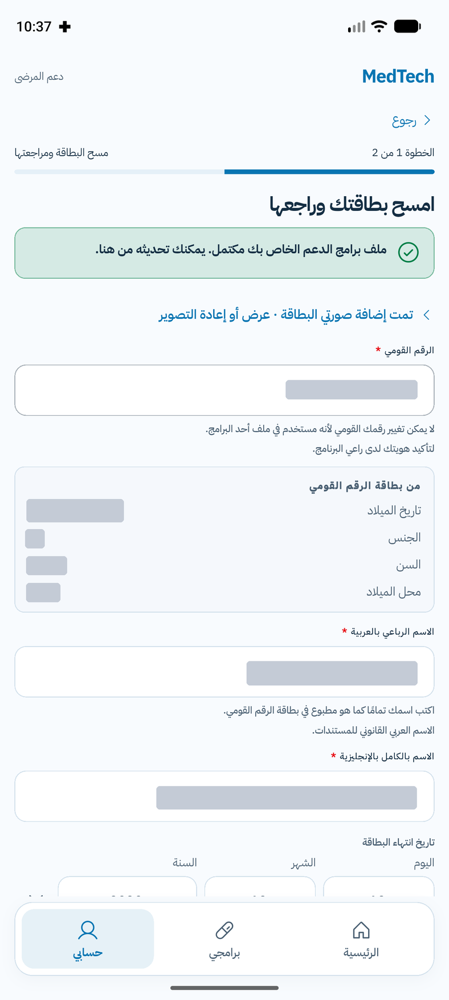
- 1تخبرك هذه الرسالة بأن ملفك مكتمل، ويمكنك مع ذلك تحديثه من هنا.
- 2تمت إضافة صورتي البطاقة · عرض أو إعادة التصوير — افتحها لترى صورتي بطاقتك أو تلتقطهما من جديد.
- 3الرقم القومي — رقمك القومي. بعد أن تستخدمه حالة في أحد البرامج لا يمكن تغييره.
- 4من بطاقة الرقم القومي — تاريخ ميلادك والجنس والسن ومحل الميلاد، مأخوذة من بطاقتك.
- 5الاسم الرباعي بالعربية — اكتبه تمامًا كما هو مطبوع في بطاقتك — ثم الاسم بالكامل بالإنجليزية.
- 6تاريخ انتهاء البطاقة — التاريخ الذي تنتهي فيه صلاحية بطاقتك.
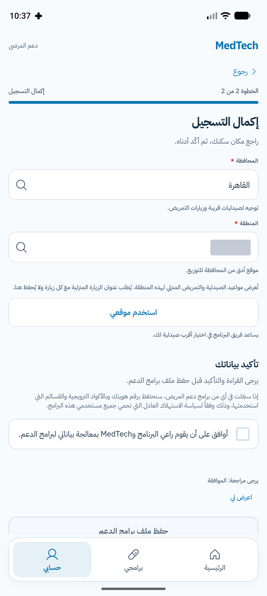
- 1المحافظة — مكان سكنك، ويُستخدم لتوجيهك إلى صيدليات قريبة وزيارات التمريض.
- 2المنطقة — موقع أدق من المحافظة. تُعرض مواعيد الصيدلية والتمريض المنزلي لهذه المنطقة، ويُطلب عنوان الزيارة المنزلية مع كل زيارة ولا يُحفظ هنا.
- 3استخدم موقعي — اختياري، ويساعد فريق البرنامج على اختيار أقرب صيدلية لك.
- 4تأكيد بياناتك — اقرأ كيف يُحتفظ برقم هويتك والقسائم التي استخدمتها وفقًا لسياسة الاستهلاك العادل.
- 5ضع علامة على أوافق على أن يقوم راعي البرنامج وMedTech بمعالجة بياناتي لبرامج الدعم.
- 6يرجى مراجعة: الموافقة — ما زال ناقصًا قبل الحفظ، واعرض لي ينقلك إليه.
قد يُطلب منك في أسفل الصفحة وزنك وطولك وأي أسئلة يضيفها البرنامج. بعد أن يكتمل كل شيء اضغط حفظ ملف برامج الدعم.
وافق على شروط البرنامج
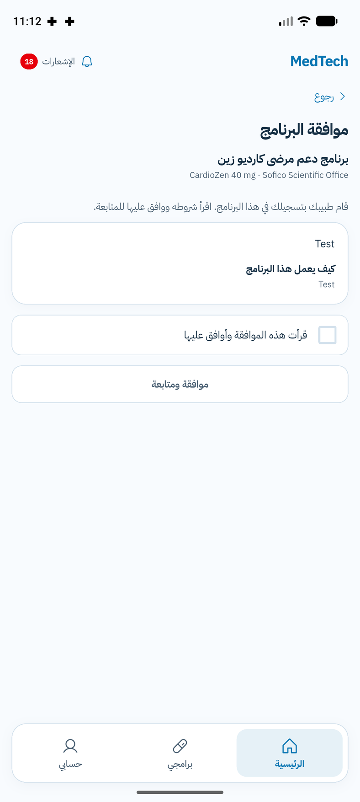
- 1البرنامج الذي سجّلك فيه طبيبك، مع دوائه.
- 2شروط البرنامج — اقرأها حتى النهاية.
- 3ضع علامة على قرأت هذه الموافقة وأوافق عليها.
- 4موافقة ومتابعة — يعمل الزر بعد وضع العلامة.
أرسل مستنداتك
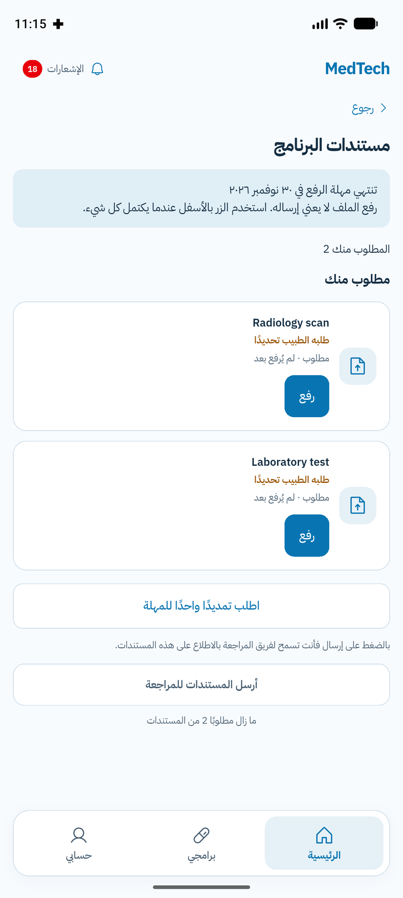
- 1تنتهي مهلة الرفع في — آخر يوم لإرسال مستنداتك.
- 2مطلوب منك — بطاقة لكل مستند. وعبارة طلبه الطبيب تحديدًا تميّز المستندات التي طلبها طبيبك.
- 3رفع — التقط صورة أو اختر ملفًا (صورة أو PDF حتى ٢٠ ميجابايت).
- 4اطلب تمديدًا واحدًا للمهلة — إذا احتجت وقتًا أطول. يمكنك الطلب مرة واحدة فقط.
- 5أرسل المستندات للمراجعة — رفع الملف لا يعني إرساله، ولا تُحتسب المستندات إلا بعد إرسالها.
إذا رُفض مستند يظهر السبب على بطاقته — ارفعه مرة أخرى ثم أرسل المستندات.
تابع حالتك
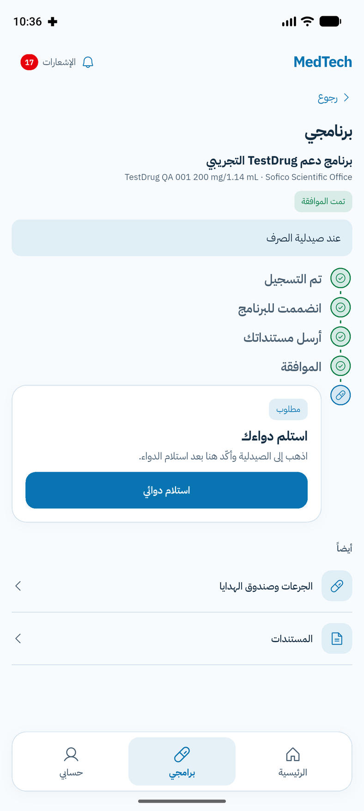
- 1برنامجك ودواؤه والمرحلة التي وصلت إليها حالتك — هنا تمت الموافقة.
- 2طريقة استلام دوائك — هنا عند صيدلية الصرف.
- 3رحلتك: تم التسجيل، انضممت للبرنامج، أرسل مستنداتك، الموافقة. تظهر علامة صح على كل خطوة اكتملت.
- 4الخطوة المطلوبة منك الآن — هنا استلم دواءك، مع زر استلام دوائي.
- 5الجرعات وصندوق الهدايا والمستندات لفتح جرعاتك ومستنداتك.
تجد برامجك المنتهية، وكم وفّرت في كل منها، في سجل البرامج.
| ما تعرضه حالتك | المعنى |
|---|---|
| بانتظار المستندات | أرسل المستندات التي طلبها البرنامج. |
| تم إرسال المستندات / قيد المراجعة | فريق البرنامج يراجع مستنداتك. |
| مطلوب معلومات إضافية | يحتاج الفريق شيئًا آخر — افتح مستندات البرنامج. |
| أُعيد الإرسال | أرسلت التصحيح، والفريق يراجعه. |
| مقبولة | يمكنك استلام دوائك. |
| مرفوضة | لم يقبل البرنامج الحالة. يمكن لطبيبك تسجيلك من جديد. |
| أُغلقت — انتهت المهلة | لم تُرسل المستندات في الوقت المحدد. |
استلم دواءك
عندما تجهز الجرعة يصلك إشعار وتظهر في الرئيسية.
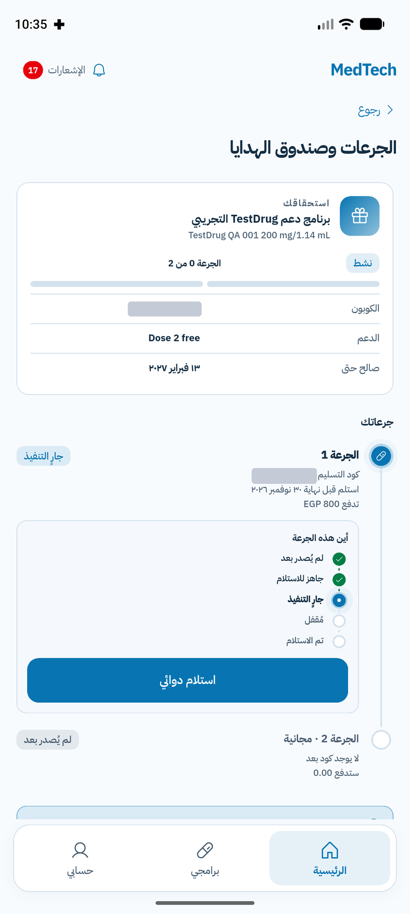
- 1استحقاقك — الكوبون الذي يغطي دورتك العلاجية كاملة: رقم الكوبون، والدعم الذي تحصل عليه، وتاريخ صالح حتى.
- 2تقدّمك: الجرعات المستلمة من إجمالي الجرعات التي تغطيها دورتك (هنا الجرعة 0 من 2).
- 3جرعاتك — كل جرعات دورتك، بما فيها القادمة. تعرض كل جرعة كود التسليم وآخر موعد لاستلامها وما تدفعه.
- 4أين هذه الجرعة — المرحلة التي وصلت إليها الجرعة الحالية، من لم يُصدر بعد إلى تم الاستلام.
- 5استلام دوائي يفتح شاشة الاستلام لهذه الجرعة.
- 6الجرعة القادمة لا كود لها حتى تصدر. وكلمة مجانية تعني أنك لا تدفع شيئًا مقابلها.
الكوبون الواحد يغطي دورتك العلاجية كاملة وليس جرعة واحدة. لكل جرعة كود تسليم خاص بها يصدر جرعة تلو الأخرى.
إذا طُلب منك اختيار صيدلية
أحيانًا يجد فريق البرنامج أكثر من صيدلية لديها دواؤك ويترك لك الاختيار. يظهر الاختيار في برامجي وعليه علامة مطلوب.
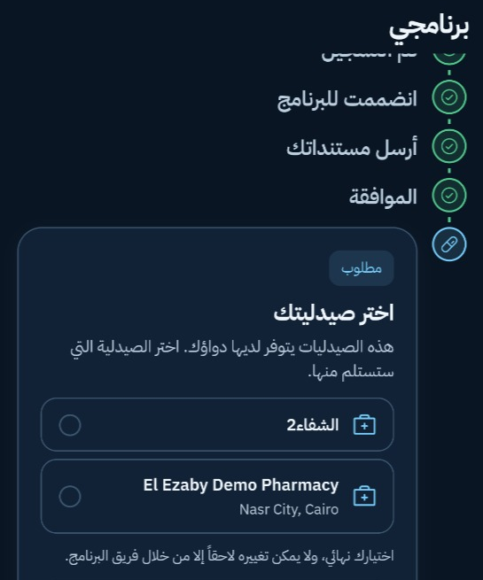
- 1اختر صيدليتك — هذه الصيدليات يتوفر لديها دواؤك.
- 2اضغط على الصيدلية التي ستستلم منها.
- 3اختيارك نهائي، ولا يمكن تغييره لاحقاً إلا من خلال فريق البرنامج.
بعد أن تختار، اضغط زر التأكيد أسفل البطاقة. ومن بعدها يتم الاستلام كما هو موضّح أدناه.
في الصيدلية
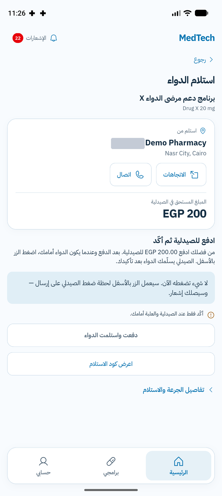
- 1استلم من — الصيدلية التي تذهب إليها، مع الاتجاهات واتصال.
- 2المبلغ المستحق في الصيدلية — ما تدفعه عند الصيدلية مقابل هذه الجرعة.
- 3ما المطلوب منك لهذه الجرعة — هنا ادفع للصيدلية ثم أكّد: ادفع المبلغ للصيدلي أولًا.
- 4اعرض كود الاستلام — يرسل لك التطبيق رمزًا برسالة SMS أولًا، ثم يبقى كود الاستلام (رمز QR) ظاهرًا لمدة ١٠ دقائق. اعرضه على الصيدلي مع بطاقتك الشخصية.
- 5دفعت واستلمت الدواء — لا يعمل الزر حتى يرسل لك الصيدلي الجرعة، كما توضح الرسالة فوقه، ويصلك إشعار عندها. اضغطه فقط والدواء أمامك.
- 6تفاصيل الجرعة والاستلام — مزيد من المعلومات عن هذه الجرعة.
ابتداءً من الجرعة الثانية أحضر علبة الجرعة السابقة.
تتابع الشاشة ما يفعله الصيدلي أولًا بأول. إذا كانت الجرعة مجانية فلا تدفع شيئًا، وتكتفي بتأكيد الاستلام عندما يكون الدواء أمامك.
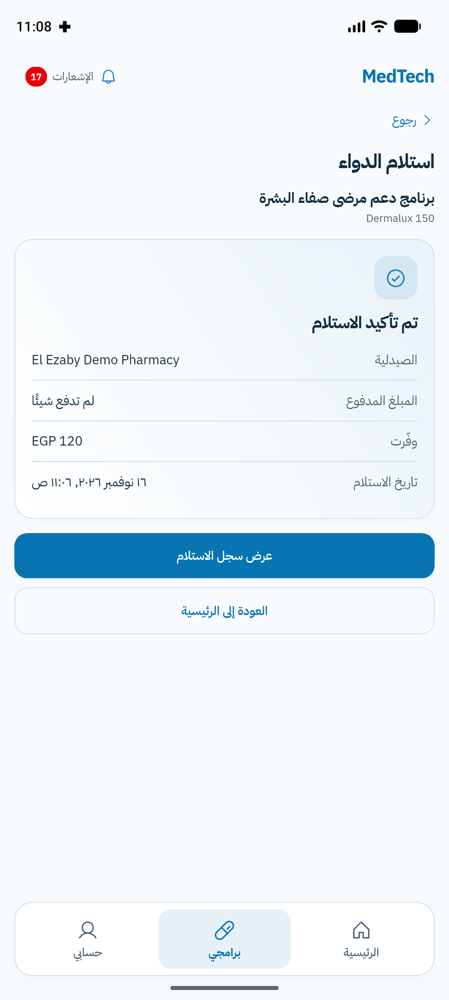
- 1تم تأكيد الاستلام — يمكن للصيدلي الآن أن يسلّمك الدواء.
- 2الصيدلية، وما دفعته (المبلغ المدفوع)، وكم وفّرت (وفّرت)، ومتى استلمت (تاريخ الاستلام).
- 3عرض سجل الاستلام — السجل الكامل لما تم تسليمه.
مع ممرض/ة في المنزل
بعض البرامج توصل الجرعة إلى المنزل.
- 1اختر موعد الزيارة من المواعيد المتاحة لمنطقتك.
- 2أدخل عنوان هذه الزيارة.
- 3احجز الزيارة.
- 4في يوم الزيارة، عند وصول الممرض/ة: الممرض/ة وصل — أكّد الاستلام.
يمكنك تغيير موعد زيارة محجوزة. إذا حُجز الموعد الذي اخترته للتو يطلب منك التطبيق اختيار موعد آخر.
احجز زيارة طبيب
افتح حجوزاتي من الرئيسية، ثم اختر البحث عن طبيب.
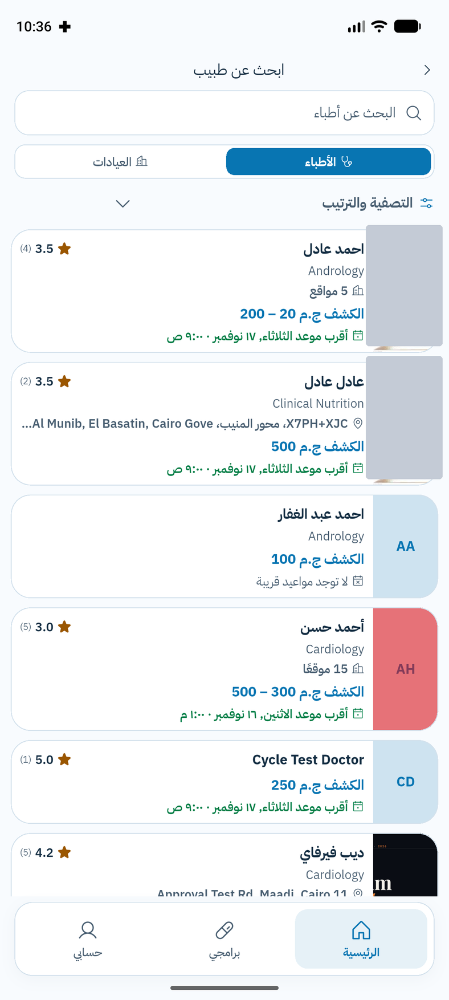
- 1البحث عن أطباء — ابحث باسم الطبيب.
- 2الأطباء أو العيادات — ابحث عن طبيب أو عن عيادة.
- 3التصفية والترتيب — صفِّ النتائج حسب التخصص والمحافظة والمدينة، ورتّبها حسب التقييم أو السعر أو أقرب موعد أو المسافة.
- 4يعرض كل طبيب تخصصه وعدد مواقعه وسعر الكشف وأقرب موعد وتقييمه.
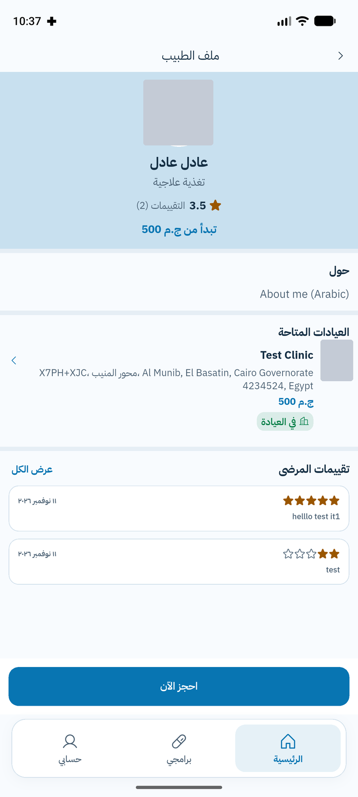
- 1تقييم الطبيب وعدد التقييمات، وأقل سعر للكشف.
- 2حول — نبذة عن الطبيب.
- 3العيادات المتاحة — كل عيادة بعنوانها ورسومها ونوع الزيارة، مثل في العيادة.
- 4تقييمات المرضى — ما كتبه المرضى الآخرون دون ذكر أسمائهم. وعرض الكل يعرض كل التقييمات.
- 5احجز الآن.
أكمل الحجز
- اختر العيادة ونوع الزيارة.
- اختر موعدًا متاحًا خلال الأيام الأربعة عشر القادمة.
- أجب عن أسئلة الطبيب إن وُجدت.
- اختر هل يمكن للطبيب الاطلاع على تاريخك الطبي.
- اقرأ سياسة الحجز وضع علامة على أقر بالسياسة.
- راجع ملخص الحجز واضغط إرسال طلب الحجز.
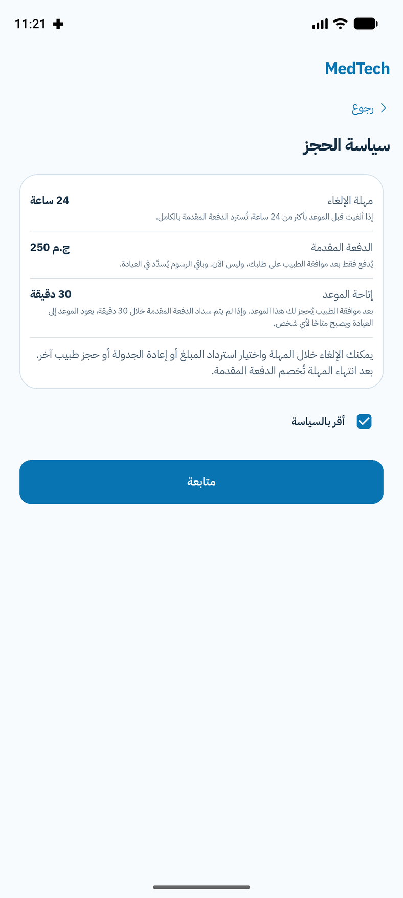
- 1مهلة الإلغاء — إذا ألغيت قبل موعدك بأكثر من هذه المدة تُسترد الدفعة المقدمة بالكامل، وبعد ذلك لا تُسترد.
- 2الدفعة المقدمة — تُدفع فقط بعد موافقة الطبيب على طلبك، وليس الآن. وباقي الرسوم يُسدَّد في العيادة.
- 3إتاحة الموعد — بعد موافقة الطبيب يُحجز لك الموعد هذه المدة؛ وإذا لم تسدّد الدفعة المقدمة خلالها يعود الموعد إلى العيادة.
- 4ضع علامة على أقر بالسياسة.
- 5متابعة.
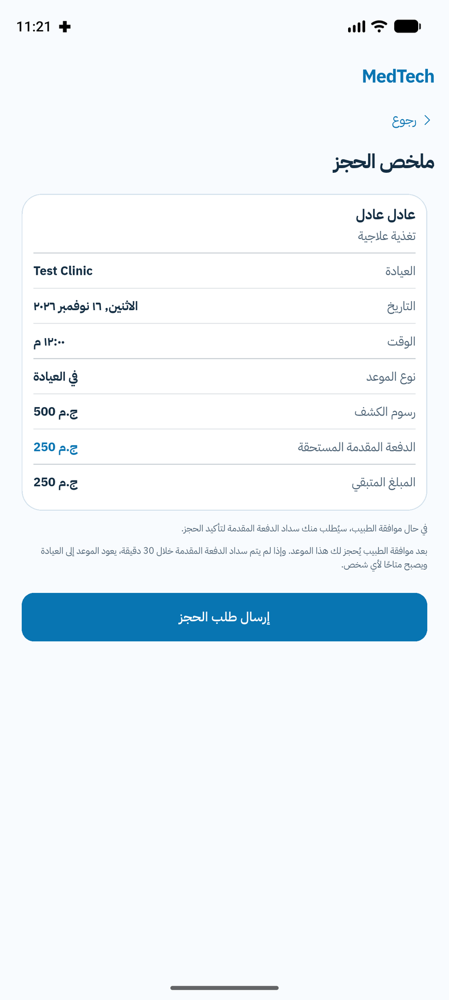
- 1راجع الطبيب والعيادة والتاريخ والوقت ونوع الموعد.
- 2رسوم الكشف والدفعة المقدمة المستحقة والمبلغ المتبقي (يُدفع في العيادة).
- 3إذا وافق الطبيب يُطلب منك سداد الدفعة المقدمة لتأكيد الحجز.
- 4إرسال طلب الحجز — يرسل الطلب إلى الطبيب. لا يُخصم أي مبلغ الآن.
حجوزاتك
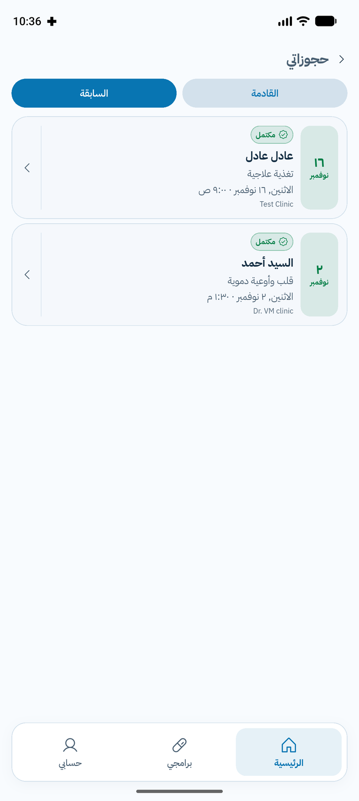
- 1الحجوزات القادمة والسابقة.
- 2يعرض كل حجز حالته — هنا مكتمل. وقد تكون حجوزات أخرى بانتظار موافقة الطبيب، أو بانتظار الدفعة المقدمة، أو مؤكدة.
- 3اضغط على الحجز لترى تفاصيله وما يمكنك فعله.
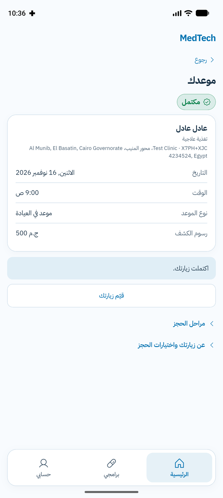
- 1المرحلة التي وصل إليها الحجز — هنا مكتمل.
- 2الطبيب والعيادة، والتاريخ والوقت ونوع الموعد ورسوم الكشف.
- 3قيّم زيارتك — يظهر بعد اكتمال الزيارة.
- 4مراحل الحجز — كل خطوة مرّ بها هذا الحجز حتى الآن.
- 5عن زيارتك واختيارات الحجز — إجاباتك عن أسئلة الطبيب والاختيارات التي حددتها عند الحجز.
قبل الزيارة تعرض هذه الشاشة أيضًا ما يمكنك فعله: سداد الدفعة المقدمة بعد موافقة الطبيب، أو تغيير الموعد (يحتاج الموعد الجديد إلى موافقة الطبيب مرة أخرى)، أو الإلغاء. بعد الإلغاء يمكنك استرداد الدفعة المقدمة، أو نقلها إلى حجز مع طبيب آخر. وقبل أن تلغي يخبرك التطبيق هل ستُسترد دفعتك المقدمة.
بعد الزيارة
- 1الأدوية مع الجرعة وعدد المرات والمدة والتعليمات.
- 2افتح مستند الوصفة.
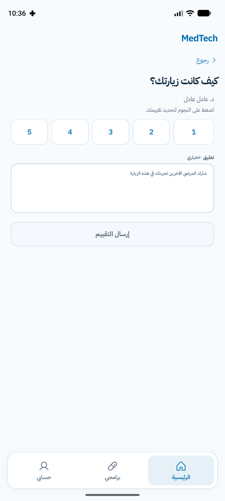
- 1اضغط على رقم من ١ إلى ٥ لتقييم الزيارة.
- 2تعليق — اختياري، حتى ٥٠٠ حرف، ويقرؤه المرضى الآخرون.
- 3إرسال التقييم. يمكنك تعديله أو حذفه خلال ٢٤ ساعة.
الإشعارات
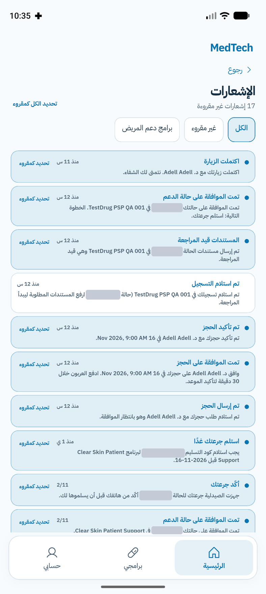
- 1عدد الإشعارات غير المقروءة، وتحديد الكل كمقروء.
- 2الكل وغير مقروء وبرامج دعم المريض — كل الإشعارات، أو غير المقروءة فقط، أو إشعارات برامجك فقط.
- 3اضغط على الإشعار لفتح ما يخصه. النقطة الزرقاء تميّز الإشعارات غير المقروءة.
- 4تحديد كمقروء — لإشعار واحد.
اسحب الإشعار جانبًا لحذفه. اختر الإشعارات التي تصلك من الإعدادات ← تفضيلات الإشعارات: المواعيد، والأدوية، والبرامج، والعروض.
حسابي
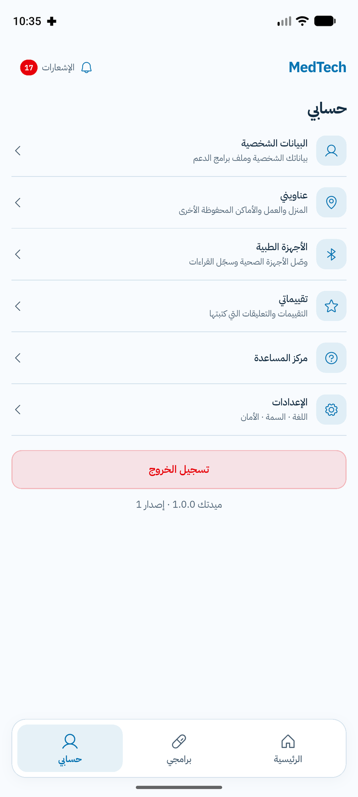
- 1البيانات الشخصية — بياناتك وملف برامج الدعم.
- 2عناويني — المنزل والعمل والأماكن المحفوظة الأخرى.
- 3الأجهزة الطبية — وصّل جهاز بلوتوث مدعومًا (الضغط، الحرارة، الأكسجين، الوزن) واحفظ قراءاته.
- 4تقييماتي — التقييمات والتعليقات التي كتبتها. ومركز المساعدة أسفلها مباشرة.
- 5الإعدادات — اللغة والسمة والأمان.
- 6تسجيل الخروج.
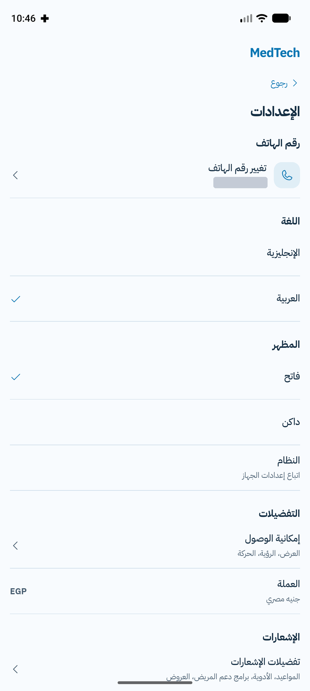
- 1تغيير رقم الهاتف — انقل حسابك إلى رقم جديد، ويحتاج ذلك إلى رمز SMS جديد.
- 2اللغة — الإنجليزية أو العربية.
- 3المظهر — فاتح أو داكن أو النظام ليتبع إعدادات هاتفك.
- 4إمكانية الوصول — خيارات العرض والرؤية والحركة، مثل الخط الأكبر أو العريض والتباين العالي.
- 5العملة — تُعرض الأسعار بالجنيه المصري (EGP).
- 6تفضيلات الإشعارات — اختر الإشعارات التي تصلك.
في أسفل الشاشة قفل التطبيق بالوجه أو البصمة حتى لا يفتحه غيرك، وحذف الحساب الذي يحتاج أيضًا إلى رمز SMS جديد.
إجابات سريعة
غيّرت هاتفي. ثبّت التطبيق وسجّل الدخول برقم الموبايل نفسه. إذا تغيّر رقمك فاستخدم تغيير رقم الهاتف ما دام الرقم القديم معك، أو تواصل مع الدعم من تواجه مشكلة في الدخول؟.
هل يمكنني الانضمام إلى برنامج بنفسي؟ لا. يسجّلك طبيب يعمل مع البرنامج بعد الزيارة.
الصيدلية تقول إن الكود غير موجود. تأكد أنك في الصيدلية الظاهرة في التطبيق. إذا انتهت صلاحية الكود فتواصل مع دعم البرنامج من شاشة الاستلام.
انقطع الإنترنت. تبقى مسجّل الدخول. يظهر لك شريط عندما تكون غير متصل؛ حاول مرة أخرى بعد عودة الاتصال.